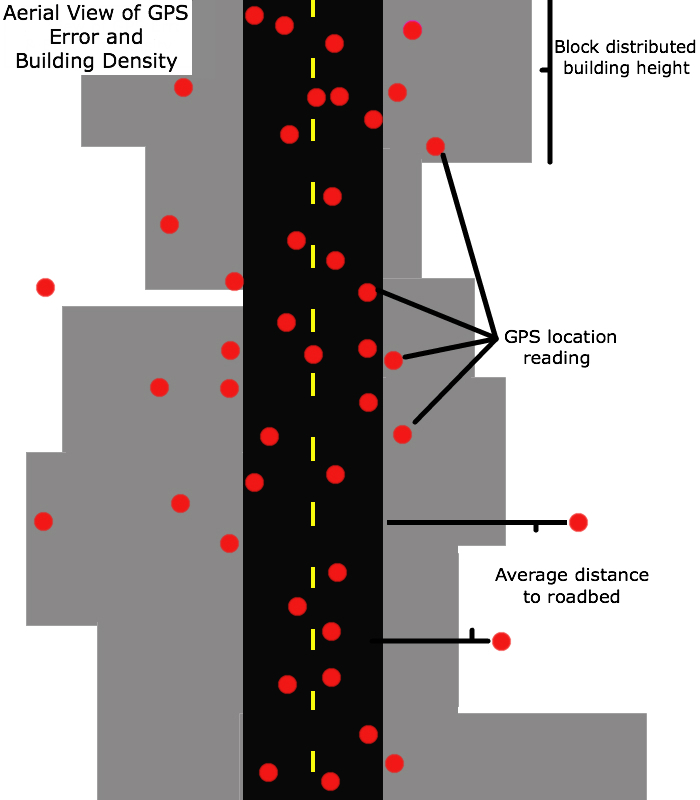

Using NYC Building Data (2013) to predict multipath GPS error in NYC Taxi Data (2013)
Use of global positioning system (GPS) technology has become a standard method of data collection in geographical epidemiology and public health studies.
However, in dense urban environments, GPS measurements are highly prone to error as signals bounce off large buildings and other structures.
Formally defined as multipath error, these reflections increase the distance that the GPS signal must travel to reach the receiver—causing miscalculations in position.
Multipath problems can result in locations that seemingly wander or jump as the signal is dropped and regained.
Multipath Error

Although the error associated with these split second delays may seem negligible, the multipath phenomena can substantially impact positional accuracy and tracking measurements.
In order to evaluate the associations between urban density and GPS positional accuracy we used data from the New York City (NYC) Taxi and Limousine Commission containing information on the approximately 175 million NYC yellowcab taxi trips that occurred in 2013.
We hypothesized that higher building density would be positively associated with errors in accuracy.
My research group, the Built Environment and Health Project has been using and seeing GPS and accelerometry data emerging in many health-related research studies.
We've noticed a lot of error in areas with high building density. So we've been sending students out on structured walks to better assess how the built environment influences GPS signal.
In two slides, we'll see two walks down two different streets (one with low and one with high built density) in NYC (Bronx and Midtown Manhattan).
Two students walked together each carrying two DG-100 GPS devices and the RunKeeper app on their smartphones.

If researchers were assessing walking or traveled distance by using the raw un-processed GPS data they could potentially overestimate distance traveled in areas of high multipath error.
We've sent students on about 40 different walks stratified by the upper and lower quartiles of distributed building height (explained in later slides) and are planning on putting out some documentation providing recommendations on using GPS data for public health research and how folks should plan on using some GPS cleaning/snapping methods.
The Taxi pickup and dropoff GPS data appeared to have the same error.
So it seemed worthwhile and exciting to investigate it and potentially our REDS group's analysis to guide further research.
A map of all dropoff and pickup GPS points in 2013 (starts of trips in blue and the ends in orange on this map:) New York City taxi trips - Eric Fisher, Mapbox. Note points in water and over where buildings are.
Taxi Pickups and Dropoffs by Census Block
iPython notebook to intersect the Census Blocks and Taxi Pickups and Dropoffs, shapefile to csv (GDAL/OGR), combine tables , and concat master table.
We hypothesized that higher building density (Distributed Building Height) would be positively associated with errors in accuracy.
Modeling Buildings...
Data
- NYC Building Footprints 2013-09 release with Roof Height and Ground Elevation - these attributes are no longer available via Open Data - that's why its important to archive data.
- NYC Census Blocks 2010 (I used v. 11a)
Assumptions and Limitations
- All data used is publicly available.
- Buildings are extruded from the ground elevation to maximum height - building setbacks are not modeled with publicly available data.
Distributed Building Height MODEL
convert -delay 200 -loop 0 img/png/*.png img/gif/dist_bldg_hght_ani.gif #imagemagick-png to gif code
Distributed Building Height
Calculating Distributed Building Height (referred to as building bulk density in code).
Modeling GPS Error...
Data
Assumptions and Limitations
- We don't know the 'truth' of where a Taxi Pickup/Dropoff occurred.
- Assume that a Taxi Pickup/Dropoff that occurred on Roadbed was valid, meaning a pickup on 42nd Street didn't actually occur on 42rd Street.
- Taxi's can only pick up on the Roadbed data layer.
Taxi Pickups/Dropoffs Roadbed Diagram
Average Distance to Roadbed
Calculating Distance (arcpy.GenerateNearTable_analysis) from Pickup/Dropoffs to Nearest Roadbed feature, OGR-GDAL and Pandas IPython Notebooks for Data Munging.
Percent Block Covered with Building Footprint
The Analytical Datasets
Summary Statistics for Census Blocks
nycb2010_taxi_2013_stats_bldg_cnt_pctcbbldg.csv (4 MB)
Distance to Roadbed data for all 2013 Taxi Pickups/Dropoffs
taxi_2013.csv (18.56 GB - OSX-journaled)
Hosted them on Google BigQuery
Variables for all 2013 Taxi Pickups/Dropoffs
- tuid - Unique Taxi trip ID.
- dist_roadbed - distance to nearest roadbed, 0 is in roadbed.
- geoid - Unique Census Block ID.
- dist_bldg_hght - Distributed building height (meters), our predictor for causing error.
- type - p: pickup, d: dropoff location

Variables for Census Blocks
- geoid - Unique Census Block ID
- avgbrdist - Average Distance from Roadbed for taxi pickup and dropoff observations for 2013 in Census Block.
- medbrdist - Median Distance from Roadbed for taxi pickup and dropoff observations for 2013 in Census Block.
- stdbrdist - Standard Deviation of Distance from Roadbed for taxi pickup and dropoff observations for 2013 in Census Block.
- count - Count taxi pickup and dropoff observations for 2013 in Census Block.
- areasqft - Area of Census Block in square feet.
- countbldg - Count of Buildings in Census Block.
- bldgareaft - Building footprint area in square feet in Census Block.
- pctcbbldg - Percent Census Block covered by building footprint.
- dist_bldg_hght - Distributed building height (meters), our predictor for causing error.

The Statistical Analysis
Mapping both Block Height and Roadbed Distance
To understand the relationship further, we need to map both variables together.